複数の要素をまとめてひとつのコンポーネントという部品にして再利用できるようにします。コンフィグレーション機能を使って、各部寸法や配管の径が異なるバリエーション部品を簡単に呼び出せるようにすることもできます。
コンポーネントにしたい要素を選択し、必要であればパイプの接続位置や接続する配管の種類、コンポーネントの重量などを指定してOKをクリックします。
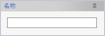
コンポーネント定義を識別するための名前を指定します。コンポーネントを配置すると、この名前がそのままコンポーネント名として使われます。
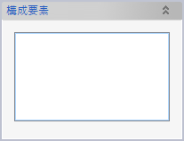
コンポーネントに含める要素を選択します。
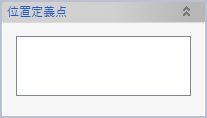
コンポーネントを配置・移動する際の基準となる点を指定します。マニピュレータによる配置・移動時には位置定義点がマニピュレータの原点になります。位置定義点を複数指定しておくと、マニピュレータの原点位置を各定義点に順番に切り替えていくことができます。また各種拘束によりコンポーネントを配置・移動したり、寸法を追加したりする際にも、位置定義点を基準点として使うことができます。
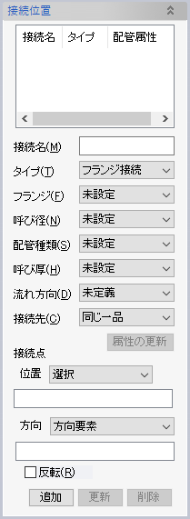
コンポーネントにパイプを接続する位置を定義します。接続名と接続点の位置および方向を指定して「追加」ボタンをクリックします。接続位置に各種配管属性を指定しておくと、接続位置からパイプを作成する際にパイプにも自動的に同じ属性が設定されたり、属性が一致しないパイプが接続されていることを検出できたりします。
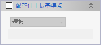
配管一品図における仕上長（仮想交点を基準とする長さ）の基準点を指定します。未指定の場合にはひとつめの位置定義点（あれば）が基準点となります。
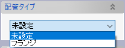
標準部品に登録されていないフランジをコンポーネントとして作成した場合に、配管タイプを「フランジ」に設定しておくと、配管一品図の部品表に抜き代が表示されます。抜き代は配管仕上長基準点から接続位置（複数あった場合は基準点から最も遠いもの）までの距離として定義されます。
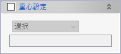
質量特性の算出時に使われる重心位置をコンポーネントで独自に設定できます。
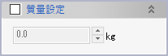
質量特性の算出時に使われる質量をコンポーネントで独自に設定できます。
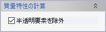
部品の可動範囲をモデリングしておいて、干渉チェックで周辺部品とのクリアランスを確認する手法があります。このとき、可動範囲を半透明にして実体のある部品ではないことを明確にするのが一般的ですが、本オプションの「半透明要素を除外」をチェックしておくと、重量や重心の計算時に可動範囲部分を無視することができます（既定でON）。
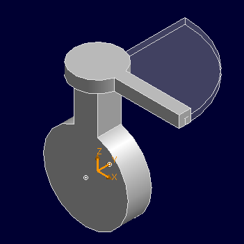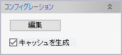
「編集」ボタンをクリックすると以下のウィンドウが表示され、コンポーネントコンフィグレーションを設定できます。
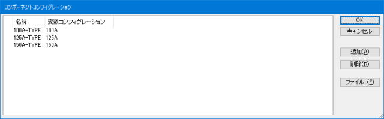「追加」ボタンをクリックするとリストの末尾に一行追加されます。追加された行を編集して、コンフィグレーション名と、コンポーネントの配置時に適用する変数コンフィグレーションを指定してください。
さらに、CSV形式の設定ファイルを利用すると、コンポーネントコンフィグレーションに接続位置のパラメーターを含めたり、サブコンポーネントがあればそのサブコンポーネントのもつコンフィグレーションのうちどれを適用するかを指定したりすることができます。
1列目には、有効なデータであることを示す「*」を記入します。1列目に「*」のない行は、ヘッダ行あるいはコメント行とみなされて無視されます。
2列目ではコンフィグレーション名を
3列目では使用する変数コンフィグレーション名（なければ空欄）を指定します。
4列名以降は下記のようになります。
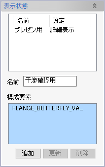
コンポーネントの表示状態を編集します。
新しい表示状態を追加するには、名前を入力し、「構成要素」選択リストボックスで表示対象となる構成要素を選択し、「追加」をクリックします。
選択した構成要素に配置済みのコンポーネント（サブコンポーネント）が含まれていた場合には、コンポーネントごとにさらに表示状態を指定できます。表示状態リスト上の項目をクリックすると、設定ダイアログが表示されますので、各サブコンポーネントの表示状態を選択してください。
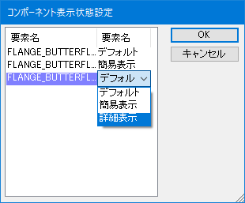
表示状態リスト上では、表示状態の名前を直接変更することができます。また表示状態の構成要素を変更したいときは、変更したい項目をリストで選択し、構成要素を選択しなおして、「更新」ボタンをクリックしてください。現在の選択内容で置き換えられます。